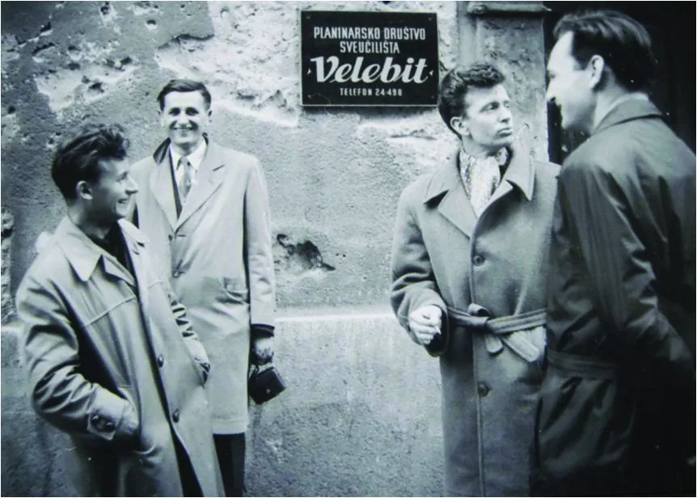

Projekt "Novi fosili" - poziv članovima PDSV
Projekt “Novi fosili” je projekt prikupljanja i stvaranja baza fotografija starih članova radi njihovog očuvanja te njihovog “oživljavanja”. O čemu je točno riječ?

Piše: Gordan Bezjak
Fotografije: arhiva PDS Velebit
Projekt “Novi fosili” je projekt prikupljanja i stvaranja baza fotografija starih članova radi njihovog očuvanja te njihovog “oživljavanja”. O čemu je točno riječ? Naime, nedavno smo proslavili 70 godina postojanja, a to su povijest i tradicija koje previše ne pazimo iako se njima dičimo. Nedavno smo preselili i u novi prostor što mnogima teško pada, jer je Radićeva oduvijek bila Velebit. “Novo normalno”, odnosno situacije koje proživljavamo zbog korone su, htjeli – ne htjeli, udaljile i otuđile ljude od nekih odsjeka, te se osjeća pad jednog zajedništva – što bi Velebit trebao biti.
Iskreno, smatram da jedno društvo nije određeno isključivo mjestom, već ljudima, a posebice poviješću i tradicijom. Ta povijest i tradicija se dovode u opasnost ako ih se ostavi da ih čuvaju oni koji su ih i stvarali. Odlaskom bilo kojeg od starih članova znači gubitak velike količine priča, slika i postignuća ako ih mi kao društvo nećemo očuvati. Zato sam osmislio projekt koji se sastoji u dvije faze:
Prva faza se sastoji od stvaranja svima dostupne baze u koju bi se stavljale slike starih članova. Svaki odsjek bi bio zadužen za sebe (naravno visokogorci za sebe). Poslao bi se proglas svim starim članovima da nam dostave svoje kolekcije slika. Vjerujem da je mali broj takvih fotografija već digitaliziran, pa ukoliko oni sami ne mogu digitalizirati slike, omogućilo bi im se da svoje kolekcije mogu ostaviti u prostoru Velebita. Posrijedi je posao gigantskih razmjera, zato bi se zajedničkim akcijama unutar svakog odsjeka (ako naravno postoji želja) te velike količine slika kroz neko vrijeme mogle skenirati i pohraniti u bazu. Svaka slika bi sadržavala godinu, mjesto, osobe na slici, ime fotografa i možda neku informaciju poput “prvi uspon na XY” ili “otkriven speleološki objekt XY” (na nedigitalizirane fotografije bi se takve informacije pisale na poleđini da onaj tko digitalizira zna sve informacije). Kad bi svi odsjeci prikupili svu građu išlo bi se na drugu fazu ovog projekta.
Druga faza se sastoji od “oživljavanja”. Naime, uz “novo normalno” i novi prostor dogodile su se i nove tehnologije, točnije pojava aplikacije koja se zove MyHeritage (https://www.myheritage.com.hr/). Ono što ta aplikacija omogućuje su kolorizacija te obrada crno-bijelih fotografija unutar nekoliko sekundi, što je izuzetan napredak u tom polju. Dotad su vješti fotografi trošili i po 5,6 sati za kolorizaciju jedne fotografije, tako da se o projektu ovakvih razmjera nikad ne bi ni pomišljalo. Iako aplikacija ima svojih nedostataka, te se zna zalomit neka greška, vremenski ispravak tih grešaka kud i kamo kraće traje, nego da se kolorizira sama slika od nule. Cilj druge faze ovog projekta je kolorizirati i obraditi sve prikupljene fotografije, ne bi li ih kasnije mogle koristiti za svakojake daljnje projekte. U privitku vam šaljem primjere originalnih i koloriziranih fotografija, koje je aplikacija kolorizirala unutar nekoliko sekundi. Slike nisu dodatno ispravljane.
Zašto sve ovo? Osim što bismo sačuvali povijest od zaborava, “oživljavanjem” povijesti ćemo oživjeti sve ono što čini Velebit, ali na jedan dosad neviđen način. “Oživljavanjem” povijesti ćemo iskazati hommage svim starim članovima, njihovim postignućima i uloženom vremenu u održavanje ovog društva, a samim time ćemo ponovno udružiti sebe same. Urednik Velebitena već namjerava odvojiti par stranica za uvođenje nove rubrike “Iz povijesti Velebita”. Obnavljanje ove stare građe omogućit će nam da tiskamo i neke nove knjige, kao i da napravimo neke nove izložbe, što će nas sigurno približiti javnosti i novim članovima. Uostalom, kako bi to izgledalo možete vidjeti na ovim primjerima:
Pred Velebitom, 50-ih godina... ...Amigo (prijatelj iz Graza), Dolfi Rotovnik, Branimir Špoljarić Žliga i Vladek Hebar
Ukoliko posjedujete stare slike navedene tematike ili znate nekoga, javite se na slijedeće mailove kako bi dogovorili preuzimanje digitalnog sadržaja ili sadržaja za digitalizaciju:
špiljari - procelnik.sov@gmail.com
planinari - popdsvelebit@gmail.com
Doček Nove godine na Kleku 1967.g. ... ... Jožef ?, Drago Katavić, Dunja Sužnjević, Antun Filipčić, Radovan Čepelak, Saša, Saška Sprach, Gordana Linke, Branimir špoljarić, sprijeda Joško Kirigin